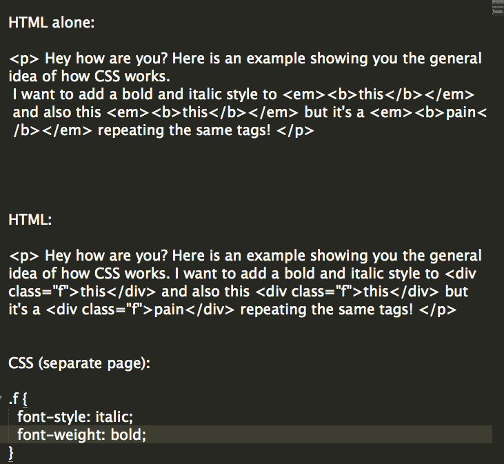
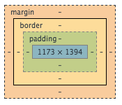

- Blog Posts
01/01/2015
HTML & CSS
This week, we learned to build a website using HTML and CSS.
HTML is a front-end web programming language that allows users to design their web page and make it look aesthetically pleasing to the web visitor. For each stylistic feature, HTML uses a different 'tag' to surround a particular content. These tags are used for features like background or text color, 'boxes' to divide the content, or text positioning. Essentially, it is most practical for making a simply webpage look pretty and readable.
CSS works hands in hands with HTML, and makes it easier for users to design their page and avoid repeated formatting. In HTML, every elements formatted requires a separate tag. As a result, it can get pretty tedious, often with way too many tags crowding a page and making it hard to follow the flow of the code.
CSS allows users who have common designs for different elements, or a common format across different webpage, to 'pack' these elements together on a separate page linked to their HTML, attributing them one (or many) stylistic theme. This 'packing' can already be pre-named, if the elements already fall into one category (such as all elements in p, or em) or can be chosen and named by the users, via 'class' (see example below) . Essentially, CSS not only avoids repetition, but also facilitates tracking changes and making edits, as it instantly becomes easier for users to see which elements they styled, and to make bulk changes.
This screenshot should give you a good example

Margins, borders and paddings are an important aspect of element positioning via CSS.
The margin represents the space around the box where the content is located. It controls how much spacing the user wants to have around his box of text, and consequently how he wants the boxes to be displayed on his webpage.
The border represents the line around the box, and formatting the border allows a user to customize its thickness, if it should be solid or dashed, its color, and even its border radius (how round its corners should be).
The padding represents the space inside the box, separating the text and the border. It's important to note that the padding element is only used to adjust the position of the text within the box. To make the padding a certain color, the user must use the "background-color" element.
Here is a diagram representing these 3 features (source: Chrome DevTools)
